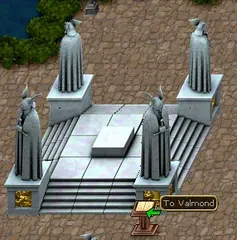
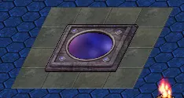
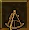
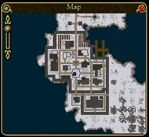
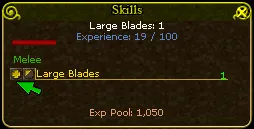
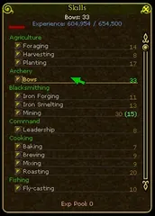
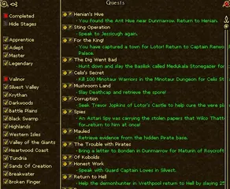

Things a beginner has to know
Travel


A granite portal to Lotor's Summer PalaceWiki

A blue portal, for longer jumpsWiki

The Sextant shows where you standWiki

The map windowWiki- The portal network. Outside Krog (3110,3686), Silvest (999,1337), Whisperdale (472,3481), Parian (3415,2919) and Josody stands a granite portal to Lotor's Summer Palace. In the palace the portals back stand together in one block. So any of these towns is two steps from any other, for free, with no waiting on the Legends server.
- Spawn gates. You come back to life at the last gate you clicked. Click the gate of wherever you are hunting, and remember to click your home gate again afterwards.
- Getting home fast. A Scroll of Return takes you to its town, three times. The patron hands one out now and then. The Stone of your town, from the Lady's shop, takes you to the Lord. A veteran says one patron coin buys it and that it has 200 uses with no cooldown; see the patron set.
- On foot otherwise. Ask a mage for a speed spell; nobody minds.
- Ships belong to the Tides of Fate expansion. A raft is free; see boats.
- A Soulstone, from the Talazar's Revenge expansion, returns you to the inn you bound it to.
Death
- You wake at your spawn gate. The place you died is marked on the map with a white gravestone.
- Around the three starting towns you are in a safe zone, caves included: as far as the river crossing towards Dawat from Krog, the guard gate towards Varg from Silvest, and the river before Darkfell from Whisperdale.
- Outside a safe zone, each death lowers the most health your weapons and armor can have, by 5 (by 10 on the Legends server). At nothing, the item is gone. Only a purchase from the store restores it. Ordinary wear is mended with potions, tools or spells.
- Your backpack. On the Legends server it stays with you. On the others, outside a no-drop zone, it stays in a grave where you fell; after a while anyone can loot it. Go back for it.
- On the Heroes and Ascension servers other players can attack you outside the towns.
So: before something risky far from home, such as the Orc Guard at the end of Agon's Test, take your gear off.
Orbs
- You start with 7 orbs to place and get 2 with every level. Your race adds one in its own attribute every 20 levels, up to five.
- The Help Menu's builds, as end points: Classic Warrior 101 Str, 100 Con, 30 Dex; Versatile Warrior 101 Dex, 100 Str, 30 Con; Classic Mage 101 Int, 100 Con, 30 Dex; Versatile Mage 101 Int, 100 Dex, 30 Con.
- The two sources disagree on the way there. The wiki says: everything into your main attribute until it is 100, and no Constitution at first. The Help Menu says: one attribute for damage, and Constitution. A character that dies less learns the game faster; a few orbs of Constitution early are not wasted.
- Requirements look at the orbs you placed. Bonuses from gear, food and totems do not count.
- Resetting your orbs is free on Valinor as often as you like, and once on the mainland, at Lady Esler in Josody. After that it is bought in the store.
The experience pool


Spending the pool on a skillWiki

The Skills windowWiki

The quest logWikiQuests pay twice: experience for your level, and the same or more again into the experience pool. The pool
is experience you hand out yourself, in the Skills window (K), to any combat skill with a + beside it. It is
how a warrior brings a second weapon to 15 for a trainer, or a mage a school of magic. It cannot go into trades
or sailing.
Two cautions from our own play: a skill needs a first level, earned by use, before the pool can go into it; and do not pour the pool into a skill a Valinor trainer is still training, or it may pass 15 before he is done.
Totems
A totem is an item you click for an effect that lasts a while.
- Totem of the Wolf Pup: attacks 0.2 faster, for 30 minutes a click (by AE Database). From "Proof" on Valinor, or "Loyal" in Whisperdale.
- Totem of the Wolf: 0.3 faster for an hour, dropped by dire wolves, wolverines and, since 2026, by hobgoblins, ettins and hunters of level 35 to 50.
- The others are made with a trade from an expansion, or belong to much higher levels.
Bags

Your backpack has 16 places (20 with VIP), and bags go inside it. Free ones, in the order you can get them:
| Bag | Places | From |
|---|---|---|
| Large Knapsack | 16 | Valinor's welcome quest |
| Old Worn Pack | 8 | Valinor, "Curtis's Secret" |
| Storage Crate | 24 | Valinor, the Farming trainer's last step; or Silvest, "Black Gold" |
| Large Knapsack | 16 | Krog, "Great Disrepair" |
| Tackle Box | 20, and what is in it weighs half | Whisperdale, "Fishing for Friends" |
| Glowing Storage Crate | 32 | Parian, the first step of the Warlords, at level 50 |
Provisioners sell smaller bags, and leatherworkers and carpenters can make their own from the first levels of the trade.
Trades worth an early look
A skill is learned by using it once, and there is no limit to how many you have. Three pay off early: Alchemy (healing potions from the first level, and the ingredients drop on Valinor), Leatherworking (a bag at level 1), and Carpentry (arrows, bolts and torches at the bottom, crates later). Fishing has its own line of quests in Whisperdale. The pool does not help with any of them.
The trades have chapters of their own: how they work, and the Taskmasters, the ones that make gear and potions, food, farming and fishing.
Lotor, Talazar, or neither
There are two sides in the world and you start on neither. Joining one, or leaving it again, is a quest that begins in Lotor's Summer Palace. For a new character it changes almost nothing: since 2020 it no longer decides who you can group with or fight, and what it opens are two dungeons for level 100 and more. Leave it until somebody you play with gives you a reason.
What does matter early is your standing. Attacking guards or townsfolk makes you a criminal, and criminals come back to life at other gates and are attacked on sight in the ordinary towns. A few towns (Redwake, Grell, Darushk, Rahura, Meroven) are the other way round and attack characters of good standing.
VIP, Power Hour, events
- VIP is the game's subscription: 10% more experience, four more places in the backpack, a stone that returns you to Lotor's Summer Palace, and automatic looting when you are alone. The game is fully playable without it. Prices are under The expansions.
- A Power Hour is an hour of extra experience for the whole server, set off by players. The experience figures on the wiki were measured during one, which is one more reason to read them as rough.
- Quests marked with a golden chalice are small errands that fail if you log out or talk to somebody else. They pay little.
- Guilds take new players gladly; joining needs an invitation, nothing more. Founding one is a long quest and 250,000 gold.